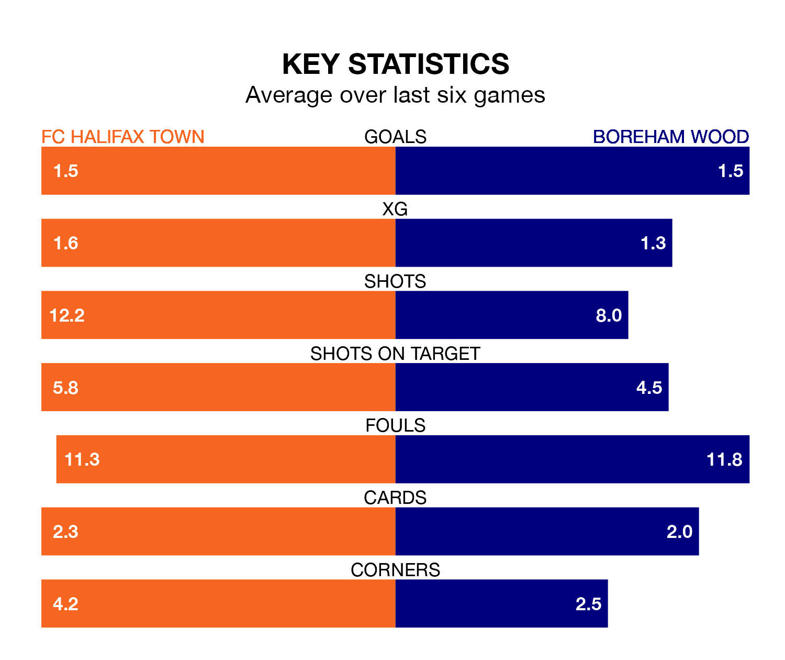

FC Halifax Town host Boreham Wood on Saturday at the Shay Stadium in the National League.
In their last league match, on March 2, FC Halifax lost to Bromley 2-0 away.
Boreham Wood drew, 1-1 at home against Gateshead, with Kabongo Tshimanga scoring their goals.
In the last 10 years, FC Halifax and Boreham Wood have played each other on 15 occasions. FC Halifax won three of them, Boreham Wood seven, and they drew five times.
On average, the Shaymen scored 0.9 goals and the Wood 1.4 in those matches.
Their last meeting was on August 12, when Boreham Wood won 2-0 at home.
With 42 goals in 36 games so far this season, FC Halifax are scoring at below the league average rate with 1.2 goals per game. But they are conceding fewer than average too, letting in 41 goals at a rate of 1.1 per game.
Boreham Wood are also below average scorers, with 1.3 goals per game, compared to a league average of 1.5. They have conceded 1.6 goals per game.
The Wood are 16th in the table after 36 games, of which they have won 10 and drawn 14, earning 44 points.
Town are six places ahead of the away team in 10th, with 14 wins and 11 draws putting them on 53 points.
The Shaymen are in reasonable form in the National League, with four wins and two losses from their last six games.
With three wins and a draw over that period, Boreham Wood's form is slightly worse – they have taken 10 points from 18, compared to the hosts' 12.
Updated: 09:34 (UTC), 08/03/24